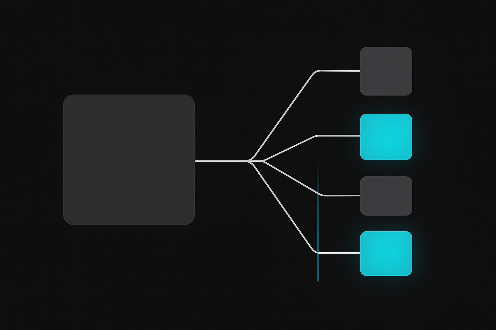
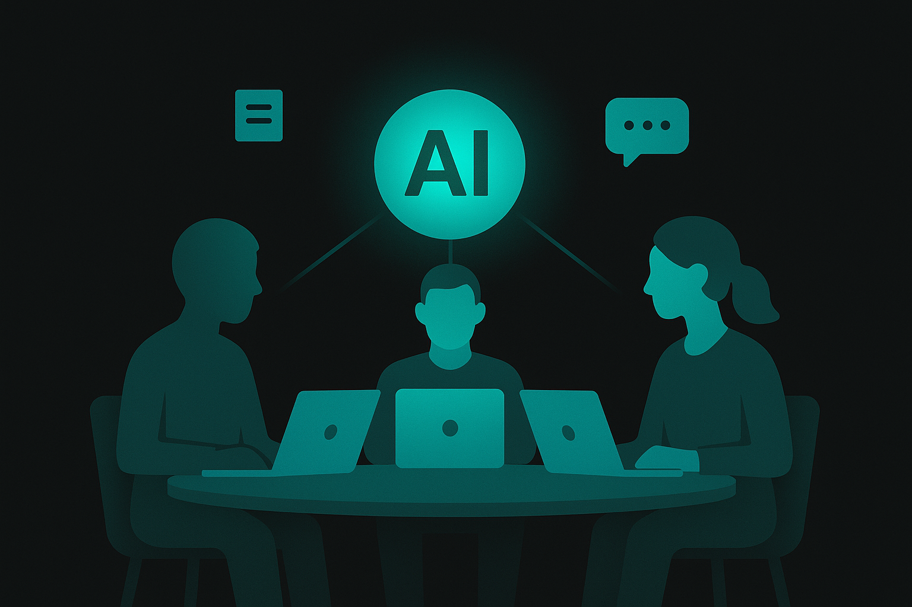

Course 03 / Layer 1 -- ツール基礎
Cowork基礎 AIとの協働術ツール操作ではなく「協働の設計」を教えるコースです。どのAIを使う場合でも共通する、人間とAIの役割分担の原則を体系的に学びます。タスク分解、品質管理、チーム運用、心理的障壁の対処まで、法人研修で実証済みの知見を凝縮しました。
初級-中級 約8時間(480分) 9 Sections + 2 Review ハンズオン比率 56%
Section 01 -- 45min(講義30 + ハンズオン15)
AI協働の大原則
AIは「代替」ではなく「思考の補助ツール」
AIとの協働を語るとき、最初に確認すべき前提があります。AIは人間を置き換えるものではなく、人間の思考を加速する道具だということ。この認識がぶれると、丸投げによる品質低下か、恐怖による不使用のどちらかに陥ります。
優秀なインターンを想像してください。膨大な作業を高速にこなすが、最終判断は任せられない。報告書を書かせたら完璧に見えるが、事実確認は自分でやる必要がある。AIとの関係はこれに近いものです。
AI協働の3原則
AIの出力は必ず人間がレビューする -- 無検証で社外に出すのは、校正なしで提出するのと同じAIに任せる範囲を事前に定義する -- 何を任せ、何を自分がやるかを曖昧にしないAIの限界を理解した上で使う -- できないことを頼めば、もっともらしい嘘が返ってくる
AI協働の成熟度モデル
%%{init:{'theme':'dark','themeVariables':{'primaryColor':'#00A5BF','primaryBorderColor':'#007A8F','primaryTextColor':'#e8e8e8','lineColor':'#00A5BF','secondaryColor':'#1a1a1a','background':'#141414','mainBkg':'#1a1a1a','nodeBorder':'#00A5BF'}}}%%
graph LR
L0["Level 0 多くの企業はLevel 1-2の段階にいる。このコースではLevel 2-3への移行を目指す
AIにできること/できないこと
AIが得意なこと
パターン認識と分類
言語生成(文章、コード、翻訳)
要約と構造化
データ整形と変換
アイデアの発散
AIにできないこと
真偽の判断(ハルシネーション)
創造的な価値判断
責任を取ること
最新情報の保証
感情への本当の共感
生産性が上がる人と上がらない人の違い
観点 生産性が上がる人 上がらない人
指示の出し方 業務を分解してからAIに渡す 「これやっといて」と丸投げ 出力への姿勢 下書きとして受け取り自分で仕上げる そのままコピペして使う 失敗への対処 指示を修正して再試行する 「使えない」と判断してやめる
Tips: 因果関係体験型アプローチ
「AIが生産性を上げる」という説明を聞くだけでは行動は変わりません。自分で指示を出し、結果を受け取り、修正するサイクルを回すことで初めて「こうすればこうなる」という因果関係が体に染み込みます。
ハンズオン: 業務AI適性仕分け 15min
目標: 自分の1週間の業務を棚卸しし、AI向き/人間向き/協働の3カテゴリに仕分ける
ステップ1: 業務リストアップ(5min)
自分が1週間で行っている業務を10個程度書き出してください
各業務の所要時間(週あたり)を概算してください
以下の3カテゴリに仕分けてください
AI向き -- AIに大部分を任せられる(データ整形、定型文作成、翻訳など)人間向き -- 人間がやるべき(最終承認、顧客との感情的なやり取り、創造的判断)協働 -- AIが下書き、人間が仕上げ(レポート、分析、企画書など)
ステップ2: AIに仕分けを検証させる(10min)
以下は私の1週間の業務リストと、AI活用の適性仕分けです。
この仕分けは妥当ですか? 改善すべき点があれば理由とともに教えてください。
【業務リスト】
1. (業務名) -- 週○時間 -- カテゴリ: AI向き/人間向き/協働
2. (業務名) -- 週○時間 -- カテゴリ: AI向き/人間向き/協働
...（10個程度記入）
【仕分けの基準】
- AI向き: 繰り返し作業、パターンマッチ、データ変換
- 人間向き: 最終判断、感情対応、未知の問題解決
- 協働: AIが下書き+人間が検証・仕上げ
フィードバックは以下の形式で:
- 仕分けが妥当な業務とその理由
- 仕分けを変更すべき業務とその理由
- 追加で検討すべき視点コピー
期待される結果の例
AIは「議事録作成」を「AI向き」から「協働」に変更するよう提案するケースが多いです。理由は、録音の文字起こしはAI向きだが、ニュアンスの判断や発言の背景理解は人間が必要だから。このように、仕分けの粒度を細かくするフィードバックが返ってきます。
「顧客対応メール」を「人間向き」と仕分けた場合、「定型的な回答は協働に移行できる」という提案が出ることもあります。業務を一括りにせず工程単位で見る視点が身につくのがこのハンズオンの狙いです。
業務を10個程度リストアップした
3カテゴリに仕分けた
AIに仕分けの検証を依頼した
フィードバックを受けて仕分けを修正した
Section 02 -- 55min(講義25 + ハンズオン30)
タスク分解の技術

なぜタスク分解が必要か
AIに「報告書を書いて」と丸投げしても、期待通りの結果はまず出ません。人間が設計し、AIが実行する部分を明確にする。その設計行為がタスク分解です。
料理に例えると、「美味しいカレーを作って」では材料も人数も辛さもわからない。「4人分、中辛、鶏もも肉300g、ジャガイモ2個」と指定して初めて調理に入れる。AIへの指示も同じ構造で考えてください。
タスク分解の4ステップ
%%{init:{'theme':'dark','themeVariables':{'primaryColor':'#00A5BF','primaryBorderColor':'#007A8F','primaryTextColor':'#e8e8e8','lineColor':'#00A5BF','secondaryColor':'#1a1a1a','background':'#141414','mainBkg':'#1a1a1a','nodeBorder':'#00A5BF'}}}%%
graph TD
S1["Step 1 分解の粒度が粗いと丸投げになり、細かすぎると管理コストが上回る。5-8工程が目安
AI適性判定の基準
適性レベル 特徴 業務例
高 繰り返し作業、パターンマッチ、言語変換、データ整形 翻訳、フォーマット変換、定型メール生成 中 分析・比較、下書き生成、アイデア出し レポート下書き、競合比較、ブレスト 低 最終判断、顧客対応の感情面、未知の問題解決 人事評価、クレーム対応の謝罪、経営判断
実例: 週次営業レポート作成
Before: 丸投げ
「先週の営業レポートを書いて」とAIに指示。AIは一般的なテンプレートで見栄えの良い文章を生成するが、自社の数字も文脈もない。結局最初から書き直すことになる。
After: 分解して委譲
データ収集 -- 人間(CRMから抽出)
データ整形 -- AI(表形式に変換)
分析コメント -- AI(前週比の指摘)
レビュー -- 人間(数字と解釈を確認)
体裁整え -- AI(フォーマット統一)
最終確認 -- 人間(承認・送信)
実例2: カスタマーサポート業務の分解
Before: 丸投げ
「お客様対応をAIでやって」と指示。AIはFAQをそれらしく生成するが、自社製品の仕様も過去の問い合わせ傾向も知らない。結果、的外れな回答テンプレートが出来上がる。
After: 分解して委譲
問い合わせ受信 -- 人間(メール/チャット確認)
カテゴリ分類 -- AI(過去データから自動振り分け)
回答ドラフト作成 -- AI(過去の回答例を参考に下書き)
技術確認 -- 人間(製品仕様との整合性チェック)
顧客に合わせた調整 -- 人間(トーン、個別事情の反映)
送信・記録 -- 人間(最終確認と送信、CRM記録)
注意: 分解の粒度を間違えるとどうなるか
粒度が粗すぎる場合 -- 「資料作成をAIに任せる」のような大きな塊のまま渡すと、AIは何を調べ、何を書き、誰に向けた文書なのか判断できません。結果としてやり直しが増え、手作業より時間がかかる。分解の効果がゼロになるパターンです。
粒度が細かすぎる場合 -- 「3行目の主語を変えて」「次に4行目の動詞を丁寧語にして」と1文ずつ指示を出すと、管理コストが生成時間を上回ります。20工程に分けたらそれだけで30分消費した、という失敗は実際に起きます。
目安は5-8工程。1つの工程が「10分以内で説明できる単位」になっているかが判断基準です。
注意: 分解コストを見積もる
5分で終わる業務を30分かけて分解しても意味がありません。繰り返し発生する業務、かつ30分以上かかる業務が分解の恩恵を受けやすい対象です。
ハンズオン: 業務プロセス分解シート作成 30min
目標: 自分の業務を1つ選び、プロセス分解シートを完成させる
ステップ1: 業務の選定と全体像(5min)
自分が週に30分以上かけている業務を1つ選んでください
その業務のゴール(何が完成すれば終わりか)を1行で書いてください
関係者(インプットを出す人、アウトプットを受け取る人)を特定してください
ステップ2: 工程分解とAI適性判定(10min)
業務を5-8の工程に分解してください
各工程のAI適性(高/中/低)を判定してください
AI適性が「高」または「中」の工程について、具体的にどうAIを使うか記入してください
ステップ3: AIに分解をレビューさせる(15min)
以下は「(業務名)」の工程分解とAI適性判定です。
この分解は適切ですか? 見落としている工程や、AI適性の判定ミスがあれば指摘してください。
【業務名】(記入)
【ゴール】(記入)
【工程分解】
1. (工程名) -- AI適性: 高/中/低 -- AI活用方法: (記入)
2. (工程名) -- AI適性: 高/中/低 -- AI活用方法: (記入)
...
フィードバックは以下の形式で:
- 見落としている可能性のある工程
- AI適性の判定を変更すべき工程とその理由
- 分解の粒度に関するアドバイスコピー
期待される結果の例
「月次レポート作成」を分解した場合、AIは「データ収集」と「データ整形」の間に「データ検証(欠損値や異常値のチェック)」が必要だと指摘するケースがあります。人間が当たり前にやっている工程は見落としがちで、AIのフィードバックによって暗黙のプロセスが可視化されます。
業務を1つ選定した
5-8の工程に分解した
各工程のAI適性を判定した
AIにレビューさせた
フィードバックを反映した
Section 03 -- 50min(講義25 + ハンズオン25)
AIへの委譲と品質管理
委譲の段階
AIへの業務委譲には段階があります。いきなり全自動化を目指すのではなく、リスクの低い段階から始めて信頼を積み上げていく進め方が現実的です。
段階 内容 リスクレベル 必要な検証
下書き依頼 AIに叩き台を作らせ、人間が全面的に編集 低 内容の方向性確認 レビュー依頼 人間の成果物をAIにチェックさせる 低-中 指摘の妥当性確認 変換依頼 既存コンテンツの形式変換(翻訳、要約、フォーマット変更) 中 変換精度と意味の保持確認 自動実行 定型ワークフローにAIを組み込み、条件付きで自律実行 高 定期監査、エラー検知の仕組み
出力検証フレームワーク: 5Cチェック
AIの出力を検証するとき、何をチェックすればいいか迷う方が多いです。5Cチェックは、検証を属人化させないための共通フレームワークです。
C チェック項目 確認のポイント
Correctness 正確性 事実は正しいか。数字、固有名詞、日付に誤りはないか Completeness 完全性 抜け漏れはないか。指示した内容が全て含まれているか Consistency 一貫性 前後で矛盾していないか。トーン、用語、論理が統一されているか Context 文脈適合 自社・自部門の文脈に合っているか。業界特有の慣習に反していないか Compliance 遵守 社内ルールやガイドラインに反していないか。著作権、個人情報に問題はないか
Tips: 3:1ルール
検証にかける時間の目安は「生成時間の3分の1」です。AIが3分で生成した文章なら、最低1分は検証に使ってください。「全部AIに任せたら早い」は幻想で、検証コストを含めた総時間で判断するのが正しい考え方です。
5Cチェックの実行例: 議事録要約をAIに依頼した場合
AIに「1時間の定例会議の議事録を要約して」と依頼し、以下の要約が返ってきたとします。
【要約】
新規顧客管理システムの設計フェーズに移行。田中PMから設計方針の説明あり。
主な決定事項:
- マイクロサービス構成を採用
- 第1フェーズは3ヶ月で完了目標
- 予算は当初計画の15%増で承認済み
この要約を5C各項目でチェックすると:
C チェック結果 発見された問題
Correctness 要注意 「予算15%増で承認済み」は実際には「15%増を申請中」だった。AIが「申請」を「承認」に変換してしまった Completeness 不足あり 宿題事項(次回までに各チームがリスク一覧を提出)が要約から抜け落ちている Consistency 問題なし 用語の揺れや論理矛盾はなし Context 要修正 「マイクロサービス構成」は社内では「分散アーキテクチャ」と呼んでいる。経営層に共有する場合、社内用語に合わせる必要がある Compliance 問題なし 個人情報や機密情報の漏洩なし
5項目中3項目で問題が見つかりました。特にCorrectnessの「申請→承認」の変換は、そのまま共有すると意思決定の混乱を引き起こす危険があります。要約は便利ですが、事実の微妙なニュアンス変更を見逃さない目が必要です。
注意: 検証なしの外部送信は事故の元
AI生成のメールをそのまま顧客に送って、存在しない製品機能を案内してしまった事例が複数報告されています。社外に出るものは必ず5Cチェックを通してください。
ハンズオン: 5Cチェック実践 25min
目標: AIに何かを生成させ、5Cチェックリストで検証し、問題点を修正する
ステップ1: AIに生成させる(5min)
以下のいずれかをAIに生成させてください(自分の業務に近いものを選択)。
以下の条件で、社内向けの週次報告メールの下書きを作成してください。
【状況】
- プロジェクト名: 新規顧客管理システム導入
- 今週の進捗: 要件定義フェーズ完了、来週から設計フェーズに移行
- 課題: 2名のメンバーが別プロジェクトと兼務で稼働率が低い
- 来週の予定: 基本設計書の作成開始、外部ベンダーとのキックオフ
- 宛先: 部長(技術に詳しくない)
【要件】
- 300文字以内
- 課題は深刻に見せすぎず、対策案も添える
- 箇条書きで読みやすくコピー
ステップ2: 5Cチェックで検証(10min)
ダウンロードしたチェックリストを開いてください
AIの出力を5つのCで順にチェックしてください
問題が見つかったCにはチェックを入れ、問題の内容を記録してください
ステップ3: フィードバックと改善(10min)
先ほどの週次報告メールについて、以下の問題点を修正してください。
【問題点】
(5Cチェックで発見した問題をここに記入)
修正版を作成した後、なぜその問題が発生したのか(原因)と、次回同様の問題を防ぐためのプロンプト改善案も教えてください。コピー
期待される結果の例
Correctnessの問題として「来週の予定で言及した外部ベンダーの社名が架空のもの」、Contextの問題として「部長宛なのに技術用語(API連携、マイグレーション等)が多い」といった指摘が典型的です。AIはプロンプトに書かれていない社内文脈を推測で埋めるため、Context系の問題が最も見つかりやすい傾向があります。
AIに文章を生成させた
5Cチェックリストで検証した
問題点を1つ以上発見した
AIにフィードバックして改善させた
Review Hands-on A -- 25min
復習ハンズオン A: 分解から検証まで一気通貫
Section 01-03で学んだ「AI適性仕分け」「タスク分解」「5Cチェック」を1つの業務で一気通貫で実践します。
課題: サンプル業務フローを分解、委譲、検証する 25min
成果物: 1つの業務を「タスク分解→AI実行→5Cチェック」で処理した結果
手順
サンプル業務フローをダウンロードしてください(5min)
タスク分解を行い、AI適性を判定してください(5min)
AI適性が「高」の工程を1つ選び、AIに実行させてください(5min)
以下の業務の一部をあなたに委譲します。
【業務名】(サンプルから選択 or 自分の業務)
【委譲する工程】(タスク分解で「AI適性: 高」と判定した工程)
【インプット】(この工程に必要な情報を記入)
【期待するアウトプット】(形式、文量、トーンなど)
上記に基づいて成果物を作成してください。コピー
AIの出力を5Cチェックで検証してください(5min)
問題点があればフィードバックして修正させてください(5min)
一気通貫フローの模範例
業務: 「顧客向け月次レポート作成」
分解: (1)データ抽出[人間] → (2)データ整形[AI:高] → (3)分析コメント[AI:中] → (4)レビュー[人間] → (5)体裁統一[AI:高] → (6)送信[人間]
AI実行: (2)のデータ整形をAIに委譲。CSVデータを表形式に変換させる。
5Cチェック: Correctness -- 数値の丸めが自社ルール(小数点第1位)と異なる → フィードバックで修正。
業務を選定した
タスク分解を行った
AI適性「高」の工程をAIに実行させた
5Cチェックで検証した
問題点をフィードバックして修正した
Section 04 -- 50min(講義25 + ハンズオン25)
チームでのAI活用

チームAI活用の3つの課題
個人でAIを使うのと、チームで使うのは根本的に異なります。個人利用は自分の中で完結しますが、チームでは品質・知識・スキルがメンバー間でバラつく問題が出てきます。
1. スキル格差
AIに長けたメンバーと、触ったことすらないメンバーが混在する。格差が放置されると、一部のメンバーに業務が集中し、チーム全体の生産性が上がらない。
2. 品質のバラつき
同じ業務でもプロンプトの書き方が個人に依存し、成果物の品質がメンバーごとに異なる。社外に出す文書の品質がバラつくのは致命的。
3. ナレッジの散逸
「このプロンプトが使える」という知見がSlackやメモに散在し、チームの資産にならない。退職や異動でノウハウが消えるリスクも高い。
共有プロンプトライブラリの設計
チームでAI活用の品質を揃えるために、プロンプトをライブラリとして共有管理する仕組みが有効です。
要素 内容 例
カテゴリ分け 業務別または目的別に分類 メール作成 / レポート / 分析 / 翻訳 メタ情報 作成者、最終更新、想定ツール、品質スコア 田中 / 2026-03-15 / Claude / 4.2/5.0 バージョン管理 改善履歴を追跡可能にする v1.0 → v1.1(出力形式を表に変更) 使用ガイド いつ、どの場面で使うかを明記 週次報告時、部長宛のみ使用
共通コンテキストの整備
AIに渡す共通の前提情報(FAQ、用語集、社内ルール)を整備しておくと、メンバー間の出力品質のバラつきが大幅に減ります。CLAUDE.mdやカスタム指示書に組み込む運用が効果的です。
AIチャンピオン制度
チーム内にAI活用の推進役を1人置く。高度なスキルは必要なく、「AIを試す頻度が高い人」で十分です。プロンプトの共有、困りごとの相談窓口、成功事例の発信を担当し、チーム全体のレベルを底上げします。
%%{init:{'theme':'dark','themeVariables':{'primaryColor':'#00A5BF','primaryBorderColor':'#007A8F','primaryTextColor':'#e8e8e8','lineColor':'#00A5BF','secondaryColor':'#1a1a1a','background':'#141414','mainBkg':'#1a1a1a','nodeBorder':'#00A5BF'}}}%%
graph LR
T1["Stage 1 チームAI活用の成熟度モデル
ハンズオン: チーム用プロンプトライブラリ設計 25min
目標: チーム用プロンプトライブラリの設計書を作成し、プロンプトを5つ登録する
ステップ1: ライブラリの設計(5min)
テンプレートをダウンロードしてください
自チーム(所属部門)の主要業務を5つリストアップしてください
各業務で「AIを使うと効率化できる場面」を特定してください
ステップ2: プロンプト5つを登録(10min)
各業務に対応するプロンプトを作成し、テンプレートに登録してください
メタ情報(想定ツール、用途、注意事項)を記入してください
ステップ3: バラつきのシミュレーション(10min)
以下のプロンプトに対して、3回それぞれ異なるアプローチで回答を生成してください。
毎回少しずつ解釈を変えて、出力のバリエーションを見せてください。
【プロンプト】
(登録した5つのうち1つをここに貼り付け)
3つの回答を生成した後、以下を分析してください:
- 3つの回答で共通している部分
- 3つの回答で異なっている部分
- バラつきを減らすためにプロンプトに追加すべき制約コピー
期待される結果の例
「お客様への謝罪メールを作成してください」というプロンプトの場合、AIは3回とも文体やトーンが異なる回答を返します。「カジュアルすぎる」「硬すぎる」「ちょうど良い」が混在するはずです。
バラつきを減らすには「ですます調で」「200文字以内で」「原因と対策を必ず含める」といった制約を追加する必要がある、という結論に至ります。共有プロンプトでは制約の明示が品質安定化の鍵になることを体感するのが狙いです。
チームの主要業務5つを特定した
各業務のプロンプトを作成しテンプレートに登録した
メタ情報を記入した
バラつきシミュレーションを実行した
バラつき低減のための制約を追加した
Section 05 -- 50min(講義25 + ハンズオン25)
AI活用の心理的障壁を越える
法人研修で観測された5つの障壁
研修を通じて数百名のビジネスパーソンと向き合ってきた中で、AI活用が進まない原因はほぼこの5つに集約されます。技術的な問題よりも心理的な問題のほうが根深い。
# 障壁 典型的な発言 対処法
1 技術的な不安 「難しそう」「ITは苦手」 まず5分だけ触る体験を用意する。成功体験を1つ積めば壁が下がる 2 存在価値への不安 「仕事を奪われる」 AIがやるのは「作業」、人間の仕事は「判断・企画・対人」だと体感させる 3 信頼性への不安 「嘘を教えられるのでは」 5Cチェックのような検証の型を渡して自分で確認できる安心感を作る 4 変化への抵抗 「今のやり方で十分」 「同じ品質を半分の時間で」を目の前でデモする 5 活用イメージの欠如 「何に使えばいいかわからない」 業務プロセス分解シートで「ここに使える」を具体的に特定する
「AIに仕事を奪われる」不安を正しく捉え直す
この不安は根強い。ただ、データを見ると実態はもう少し複雑です。
McKinsey Global Institute(2023)の分析によると、2030年までに現在の業務時間の約30%が自動化される可能性がある一方、AIによって新たに生まれる職種・業務も大量に発生すると予測されています。つまり「仕事がなくなる」のではなく「仕事の中身が変わる」が正確な表現です。
World Economic Forum(WEF)の「Future of Jobs Report 2025」も同様の結論を示しています。2030年までにAIとテクノロジーの進展で9,700万の新規雇用が創出される見込みで、減少する職種よりも増加する職種のほうが多い。ただし、求められるスキルセットは大きく変わります。
具体的に何が自動化され、何が残るか。定型的なデータ入力、単純な文書作成、ルーチンの分析作業は自動化が進みます。一方で、戦略的な意思決定、対人関係の構築、創造的な問題解決、倫理的判断を伴う業務は人間の領域として残り続けます。
Tips: 不安への最良の対処は「AIを使う側になること」
AIに置き換えられる人と、AIを使いこなす人の違いは、結局のところ「AIとの協働スキル」を身につけているかどうかに帰着します。このコースで学んでいるタスク分解、品質管理、委譲設計といったスキルそのものが、AI時代の雇用安定性を高める投資になっています。
因果関係体験型アプローチ
「AIを使うと便利ですよ」という説明は響きません。響くのは自分で体験した因果関係だけです。
「自分が指示を出す → AIが3秒で回答する → 30分かかっていた作業が5分で終わる」。このサイクルを1回でも体験すると、脳が「これは使える」と判断します。逆にいくら説明しても、体験がなければ行動は変わりません。
心理的安全性とAI導入の関係
「AIの使い方がわからなくて恥ずかしい」「変な質問をしてバカにされたくない」。この感覚がある組織ではAI活用が進みません。失敗してもいい、初歩的な質問をしてもいい、という環境がAI導入を加速させます。
具体的には「AI活用の失敗談共有会」が効果的です。うまくいった話よりも「こう使ったら全然ダメだった」という話のほうが学びが多く、心理的ハードルを下げます。
Tips: 最初の5分が全て
法人研修で最も効果的だったのは、研修冒頭の5分で全員にAIを1回使わせること。「自分の名前を入れて自己紹介文を作らせる」程度の簡単なタスクでも、「動いた」という体験が心理的障壁を大幅に下げます。
ハンズオン: 心理的障壁分析と対処 25min
目標: 自分またはチームのAI活用における障壁を特定し、具体的な対処アクションを策定する
ステップ1: 障壁の特定(5min)
ワークシートをダウンロードしてください
5つの障壁について、自分やチームメンバーに当てはまるものに印をつけてください
最も強い障壁を1つ選び、「なぜその障壁が存在するのか」の背景を記入してください
ステップ2: 対処アクションの策定(10min)
選んだ障壁に対する具体的なアクションを3つ記入してください
各アクションの「いつ」「誰が」「どうやって」を明確にしてください
ステップ3: AIに実現可能性を評価させる(10min)
以下は私のチームのAI活用における心理的障壁と、対処アクションプランです。
このアクションプランの実現可能性を評価し、改善提案をしてください。
【最も強い障壁】
(記入: 例「チームの半数が『今のやり方で十分』と感じている」)
【背景】
(記入: 例「過去にツール導入を推進して失敗した経験があり、変化に慎重」)
【対処アクション】
1. (記入)
2. (記入)
3. (記入)
評価は以下の観点で:
- 実現可能性(高/中/低)と理由
- 想定される障害
- アクションの優先順位の提案
- 追加で検討すべきアクションコピー
期待される結果の例
AIは「全体ミーティングでのデモ」を高い実現可能性と評価し、「1on1での個別フォロー」も推奨する傾向があります。逆に「AI活用を評価制度に組み込む」のような大がかりなアクションは「実現可能性: 低。まず小さな成功体験の蓄積を優先すべき」と指摘されるケースが多いです。
AI自身が「心理的安全性の確保が前提条件」と指摘する場合もあり、障壁対処の順番(まず安全な環境を作り、次に体験機会を提供する)についてのアドバイスが得られます。
ワークシートで障壁を特定した
最も強い障壁の背景を分析した
対処アクションを3つ策定した
AIに実現可能性を評価させた
フィードバックを反映してアクションを改善した
Review Hands-on B -- 25min
復習ハンズオン B: チームAI導入提案書の作成
Section 04(チーム活用)とSection 05(障壁対処)の知識を統合し、上司やチームに提示できるAI導入提案書を作成します。
課題: チームへのAI導入提案書を完成させる 25min
成果物: A4で1-2ページ程度のAI導入提案書(AIで生成→5Cチェックで検証→完成)
手順
以下のプロンプトでAIに提案書のドラフトを生成させてください(10min)
以下の情報をもとに、チームへのAI導入提案書を作成してください。
【チーム概要】
- 部署名: (記入)
- チーム人数: (記入)名
- 主な業務: (記入)
- 現在のAI利用状況: (未使用/個人的に一部利用/チームで利用中)
【導入の目的】
- 解決したい課題: (記入)
- 期待する効果: (記入)
【提案内容】
- 導入したいツール: (記入)
- 最初に適用する業務: (記入)
- チーム内の推進体制: AIチャンピオン制度を導入
【心理的障壁への対処】
- チーム内で想定される障壁: (Sec05で分析した内容を記入)
- 対処アクション: (Sec05で策定したアクションを記入)
【要件】
- A4で1-2ページに収まる分量
- 経営層やマネージャーが読む前提で、メリットとリスクの両方を提示
- 導入スケジュール(3ヶ月程度)を含めるコピー
生成された提案書を5Cチェックで検証してください(10min)
Correctness: 数字や事実の誤りはないか
Context: 自チームの実態と合っているか(ここが最も問題が出やすい)
Compliance: 社内ルール(ツール利用規定など)に反していないか
問題点があればAIにフィードバックして修正させ、最終版を完成させてください(5min)
提案書の構成例
1. 背景と目的(なぜAI導入が必要か)
2. 現状の課題(定量的に。例: 週X時間をレポート作成に費やしている)
3. 提案内容(ツール、対象業務、推進体制)
4. 期待効果(時間削減、品質向上の見込み)
5. リスクと対策(セキュリティ、品質管理、心理的障壁)
6. 導入スケジュール(Phase 1: 1ヶ月目、Phase 2: 2-3ヶ月目)
7. 予算(ツールコスト、研修コスト)
AIに提案書ドラフトを生成させた
5Cチェックで検証した(特にContextを重点確認)
問題点をフィードバックして修正した
最終版を完成させた
Section 06 -- 60min(講義25 + ハンズオン35)
業務別AI協働パターン
6つの職種別パターン
AIとの協働は職種によってパターンが異なります。自分の職種に近いパターンを見つけ、実務に落とし込む具体的なイメージを掴んでください。
1. 企画・マーケティング
%%{init:{'theme':'dark','themeVariables':{'primaryColor':'#00A5BF','primaryBorderColor':'#007A8F','primaryTextColor':'#e8e8e8','lineColor':'#00A5BF','secondaryColor':'#1a1a1a','background':'#141414','mainBkg':'#1a1a1a','nodeBorder':'#00A5BF'}}}%%
graph LR
A1["市場調査 工程 担当 AI活用内容
市場調査 AI + 人間 競合情報の要約、トレンドの整理 アイデア出し AI + 人間 ブレインストーミングの発散フェーズ 資料作成 AI + 人間 構成案と下書きの生成 最終レビュー 人間 戦略的判断、ブランド一貫性の確認
2. 営業
工程 担当 AI活用内容
リード分析 AI 顧客データの整理、優先度スコアリング 提案書下書き AI + 人間 顧客情報を基にカスタマイズした提案書生成 メールカスタマイズ AI テンプレートを顧客に合わせて調整 商談・クロージング 人間 対面での信頼構築、条件交渉
営業パターンのプロンプト例: 初回商談後のフォローメール
以下の情報を元に、初回商談後のフォローメールを作成してください。
【顧客情報】
- 企業名: [企業名]
- 担当者名: [担当者名]
- 業界: [業界]
- 従業員規模: [規模]
【商談内容】
- 日時: [日時]
- 顧客の課題: [商談で聞き取った課題を箇条書き]
- 興味を示した製品/機能: [具体的に]
- 懸念点: [予算、導入期間、技術的な不安など]
【メール要件】
- 300文字以内
- 課題への共感 → 解決策の示唆 → 次のステップ提案の流れ
- 押し売り感を出さない。「ご検討の参考になれば」程度のトーン
- 次回アクション(デモ、見積もり、追加資料送付)を1つ提案コピー
3. 人事
工程 担当 AI活用内容
求人票作成 AI + 人間 職務内容から求人票ドラフトを生成 スクリーニング補助 AI 応募書類の要約、スキルマッチ度の判定 面接質問生成 AI + 人間 ポジション別の質問リスト生成 評価・採否判断 人間 カルチャーフィット、最終的な採用判断
人事パターンのプロンプト例: ポジション別面接質問リスト
以下のポジションに対する面接質問リストを作成してください。
【ポジション情報】
- 職種: [職種名]
- レベル: [ジュニア/ミドル/シニア]
- 必須スキル: [箇条書き]
- 歓迎スキル: [箇条書き]
- チーム構成: [何名体制か、上長の役職]
【質問リスト要件】
- 技術/専門スキルに関する質問: 3問
- 行動面接(STAR形式で回答を引き出す)質問: 3問
- カルチャーフィットに関する質問: 2問
- 候補者からの逆質問を想定した準備事項: 2つ
各質問に「この質問で何を見極めたいか」の評価ポイントを添えてください。
採用バイアスを助長する質問(家族構成、出身地、年齢に関する間接的な質問)は避けてください。コピー
4. 経理・財務
工程 担当 AI活用内容
データ整形 AI CSV/Excelの変換、集計 異常値検出 AI + 人間 通常と異なるパターンの抽出 レポート下書き AI + 人間 月次/四半期レポートの文章部分 監査対応 人間 数字の最終確認、法令遵守の判断
5. カスタマーサポート
工程 担当 AI活用内容
FAQ自動応答 AI 定型質問への即座の回答 問い合わせ分類 AI カテゴリ分けと優先度付け 回答下書き AI + 人間 過去の回答を参考にドラフト生成 エスカレーション判定 AI + 人間 自動対応可否の判定、人間への引き継ぎ
6. エンジニアリング
工程 担当 AI活用内容
仕様書作成 AI + 人間 要件からの仕様書ドラフト生成 コード生成 AI + 人間 設計に基づくコード生成、補完 テスト生成 AI テストケース、テストコードの自動生成 コードレビュー 人間 + AI AIが指摘、人間が最終判断
Tips: パターンはカスタマイズするもの
上記6パターンはあくまで出発点です。自社の業務フローに合わせて工程の追加・削除・統合をしてください。「人間」と「AI」の境界線も、チームのスキルレベルや扱うデータの機密度によって変わります。
ハンズオン: 自職種の協働パターン設計 35min
目標: 自分の職種に合わせた協働パターンを設計し、1つの工程を実際にAIで実行する
ステップ1: パターンの選択と調整(5min)
上記6パターンから自分の職種に最も近いものを選んでください
自分の実際の業務に合わせて工程を追加・変更してください
該当するパターンがなければ、自分の業務に合わせてゼロから設計してください
ステップ2: 各工程のプロンプト作成(15min)
以下の業務パターンの各工程について、実際に使えるプロンプトのテンプレートを作成してください。
【職種】(記入)
【業務パターン】
工程1: (工程名) -- 担当: AI/人間/協働
工程2: (工程名) -- 担当: AI/人間/協働
...
各プロンプトは以下の形式で:
- 用途: いつ、どの場面で使うか
- プロンプト本文: コピーしてすぐ使える形式
- 変数部分: 毎回変わる箇所を [ ] で示す
- 注意点: 使用時に気をつけるべきことコピー
ステップ3: 1工程を実際に実行(15min)
作成したプロンプトの中から1つ選んでください
実際のデータ(または模擬データ)を使ってAIに実行させてください
5Cチェックで出力を検証してください
プロンプトの改善点を記録してください
期待される結果の例
営業パターンで「提案書下書き」の工程を選んだ場合、AIは顧客情報から提案書の構成と本文を生成します。5Cチェックでは「顧客の業界特有の課題が反映されていない(Context)」「提案する製品の最新価格が正しいか確認が必要(Correctness)」といった問題が見つかるはずです。
プロンプトの改善点として「顧客の業界名と主な課題を入力項目に追加する」「価格は人間が手動で最新値を入力する運用にする」などが挙がります。
自職種のパターンを選択または設計した
各工程のプロンプトを作成した
1つの工程を実際にAIで実行した
5Cチェックで検証した
プロンプトの改善点を記録した
Section 07 -- 40min(講義25 + ハンズオン15)
セキュリティとガバナンス
個人利用とチーム利用のリスク比較
リスク項目 個人利用 チーム利用
情報漏えい 自分の判断で制御可能 メンバーが無自覚に機密情報を入力する恐れ 品質リスク 自分で検証 検証スキップの習慣化、品質基準の不統一 コスト管理 個人のAPI消費を管理 組織全体の使用量を監視する仕組みが必要 コンプライアンス 個人の認識に依存 統一ルールとモニタリングの仕組みが必須
チーム利用特有のリスク
共有プロンプトに機密情報が入り込む -- プロンプトテンプレートの変数部分に、使い回しの中で実データが残ってしまうメンバーが無料版を使う -- 有料プランでデータ学習オプトアウトを確保していても、個人で無料版を併用すれば意味がないAI生成物のレビューなしで外部送信 -- 効率化を優先するあまり、検証工程がスキップされる
チーム利用ルールの設計フレームワーク
%%{init:{'theme':'dark','themeVariables':{'primaryColor':'#00A5BF','primaryBorderColor':'#007A8F','primaryTextColor':'#e8e8e8','lineColor':'#00A5BF','secondaryColor':'#1a1a1a','background':'#141414','mainBkg':'#1a1a1a','nodeBorder':'#00A5BF'}}}%%
graph LR
R1["利用ツール指定 5つの要素を順に設計すれば、チーム利用ルールの骨格が完成する
ルール策定テンプレートの記入例
項目 ルール例
利用可能ツール Claude(Team plan)、ChatGPT(Enterprise)のみ。無料版は禁止 入力禁止データ 個人情報、未公開財務情報、顧客の機密情報 レビュー必須 社外送信するメール・文書は必ず5Cチェック後に送信 インシデント対応 機密情報を誤入力した場合、直ちに上長と情報セキュリティ部門に報告 監査頻度 四半期に1回、利用ログとルール遵守状況を確認
注意: ルールは作って終わりではない
ルールを作っても、メンバーが知らなければ意味がありません。ルール策定後に全員への周知、定期的な再確認、ルール違反時の対応フローまで含めて設計してください。
ハンズオン: チーム利用ルール策定 15min
目標: 自チームのAI利用ルール(簡易版)を策定する
手順
上記のフレームワーク(5項目)に沿って、自チームのルールを記入してください(10min)
AIにルールの抜け漏れをチェックさせてください(5min)
以下は私のチーム向けに策定したAI利用ルール(簡易版)です。
抜け漏れや改善すべき点を指摘してください。
【チーム概要】
- 部署: (記入)
- 人数: (記入)名
- 主な業務: (記入)
【AI利用ルール】
1. 利用可能ツール: (記入)
2. 入力禁止データ: (記入)
3. レビュー必須の場面: (記入)
4. インシデント対応: (記入)
5. 監査頻度: (記入)
以下の観点でチェックしてください:
- 抜け漏れのあるリスク項目
- ルールが曖昧で解釈が分かれそうな箇所
- 実運用で形骸化しそうなルールと改善案コピー
期待される結果の例
AIは「個人端末からのアクセスルールが未定義」「退職者のアカウント停止手順が未記載」「ルール違反時のペナルティが不明確」といった抜け漏れを指摘するケースが多いです。ルールの粒度に関しては「入力禁止データの例が抽象的。具体例を3つ以上列挙するとメンバーが判断しやすい」というアドバイスも出ます。
5項目のルールを策定した
AIにレビューさせた
フィードバックを反映してルールを改善した
Section 08 -- 20min(講義のみ)
トレンド -- Agentic Workflowが協働をどう変えるか
AIエージェントとは
これまでのAI活用は「人間が指示 → AIが1回応答」の往復でした。AIエージェントはこのパラダイムを変えます。人間がゴールを伝えると、エージェントが自律的に複数のステップを計画・実行し、必要に応じてツールを呼び出し、最終的な成果物を返す。指示のたびに介入する必要がなくなります。
協働のパラダイムシフト
%%{init:{'theme':'dark','themeVariables':{'primaryColor':'#00A5BF','primaryBorderColor':'#007A8F','primaryTextColor':'#e8e8e8','lineColor':'#00A5BF','secondaryColor':'#1a1a1a','background':'#141414','mainBkg':'#1a1a1a','nodeBorder':'#00A5BF'}}}%%
graph TD
P1["Phase 1: 指示する 2026年時点でPhase 1→2への移行期。Phase 3はまだ実験段階
2026年以降の協働の姿
AIが下書きを作るだけでなく、工程全体をマネジメントする時代が近づいています。例えば「先月の売上データを分析して、来月の施策を3案作成し、それぞれの予算シミュレーションまで出して」と伝えれば、エージェントがデータ取得→分析→施策立案→シミュレーションを一気に実行する世界です。
人間に残る役割
自動化が進むほど、人間の役割は「実行」から「監督」にシフトします。
ゴール設定 -- 何を達成したいかを定義する。AIはゴールを与えられないと動けない価値判断 -- 「この戦略は自社のブランドに合っているか」はAIに判断できない品質保証 -- エージェントの成果物を最終承認する責任は人間にある倫理的判断 -- 「この施策は顧客にとって本当に良いか」を問えるのは人間だけ
この先を学ぶには
AIエージェントの具体的な構築方法はC06(AIエージェント入門)、MCP連携はC07(MCP活用)で扱います。このセクションでは「協働のパラダイムが変わる」という方向性の理解を目的としています。
Section 09 -- 60min(講義10 + 実践50)
総合ハンズオン: 自部門AI活用計画書を完成させる
このセクションのゴール
コース全体で学んだ知識とスキルを統合し、「自部門AI活用計画書」を完成させます。タスク分解(Sec02)、品質管理(Sec03)、チーム運用(Sec04)、障壁対処(Sec05)、業務パターン(Sec06)、ガバナンス(Sec07)のすべてを1枚の計画書に落とし込む実践です。
総合実践: AI活用計画書 50min
成果物: 自部門のAI活用計画書(テンプレートを埋めて完成)
Step 1: 対象部門と現状の整理(5min)
テンプレートをダウンロードしてください
対象部門の基本情報を記入してください
現在のAI活用状況(レベル0-4)を判定してください
Step 2: タスク分解とAI適性判定(10min)
以下の部門情報をもとに、AI活用で効果が高い業務トップ5を提案してください。
【部門情報】
- 部門名: (記入)
- 主な業務: (3-5個列挙)
- 課題: (記入)
- 現在のAI活用レベル: (記入)
各業務について:
- AI適性(高/中/低)とその理由
- 推定時間削減効果
- 導入難易度(高/中/低)
- 優先順位の推奨コピー
Step 3: ツール選定と委譲範囲の決定(10min)
Step 2で優先度が高い業務について、使用するAIツールを決定してください
各業務の委譲範囲(どの工程をAIに任せ、どこを人間が担当するか)を定義してください
5Cチェックをどの段階で実施するかを決めてください
Step 4: チーム利用ルールの策定(10min)
以下の部門のAI利用ルールについて、実用的な内容を提案してください。
【部門情報】(Step 1の内容を貼り付け)
【導入するツール】(Step 3の内容を貼り付け)
【チームの特徴】
- 人数: (記入)名
- AI経験者の割合: 約(記入)%
- 扱うデータの機密度: (高/中/低)
以下の5項目について具体的なルールを提案してください:
1. 利用可能ツールと禁止ツール
2. 入力可能データと禁止データ(具体例付き)
3. レビューフロー(どの成果物にどの検証が必要か)
4. インシデント対応手順
5. 監査と定期見直しの方法コピー
Step 5: KPI設定とロードマップ作成(15min)
以下のAI活用計画について、測定可能なKPIと3ヶ月のロードマップを作成してください。
【導入する業務】(Step 2-3の内容を貼り付け)
【チーム利用ルール】(Step 4の内容を貼り付け)
KPIは以下の区分で:
- 効率性: 時間削減、処理件数
- 品質: エラー率、やり直し回数
- 浸透度: 利用者数、利用頻度
ロードマップは:
- Month 1: パイロット期間(少人数で試験運用)
- Month 2: 展開期間(全チームに拡大)
- Month 3: 最適化期間(効果測定と改善)
各月のマイルストーンと、達成/未達の判定基準を含めてください。コピー
完成した計画書の構成例
1. 部門概要と現状(Level 1: 個人が散発的に利用)
2. AI活用対象業務(週次レポート、提案書作成、問い合わせ対応 の3業務を選定)
3. ツールと委譲範囲(Claude Team planを使用。下書き生成と翻訳をAIに委譲。最終確認は人間)
4. チーム利用ルール(入力禁止: 顧客名/契約金額。レビュー必須: 社外文書。監査: 四半期ごと)
5. KPI(レポート作成時間: 2時間→45分。提案書品質スコア: 3.5→4.2/5.0。AI利用率: 20%→80%)
6. ロードマップ(Month 1: 3名でパイロット。Month 2: 全8名に展開。Month 3: KPI測定と改善)
7. 予算(Claude Team plan 8名分: 月$200。研修: 内部で実施のため追加コストなし)
部門の現状を整理した
AI活用対象業務を特定しAI適性を判定した
ツールと委譲範囲を決定した
チーム利用ルールを策定した
KPIを設定した
3ヶ月のロードマップを作成した
計画書全体を5Cチェックで検証した
Course Catalog に戻る